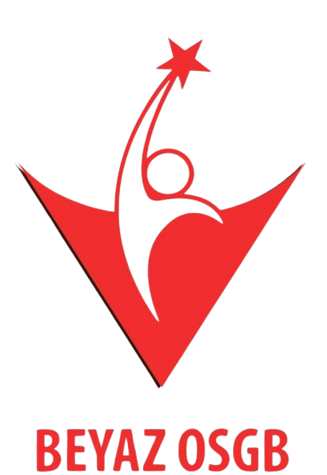
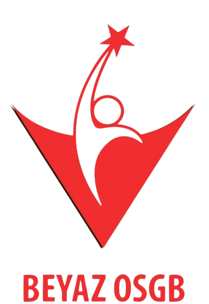

Bakanlık lisanslı Isparta'nın ilk ortak sağlık güvenlik birimi, Beyaz İş Sağlığı ve Güvenliği bünyesinde, uzman doktor ve iş güvenliği uzmanları ile pandemi ve yeni yasalar konusunda hizmetinizdeyiz.
HİZMETLERİMİZ
İş sağlığı ve güvenliği ile ilgili sıkça sorulan sorular ve cevapları.
10 dan Az Çalışanı Olan İşyerleri 10-49 Çalışanı Olan İşyerleri 50-+ Çalışanı Olan İşyerleri AZ TEHLİKELİ TEHLİKELİ ÇOK TEHLİKELİ AZ TEHLİKELİ TEHLİKELİ ÇOK TEHLİKELİ AZ TEHLİKELİ TEHLİKELİ ÇOK TEHLİKELİ İş güvenliği uzmanı görevlendirmemek. 11.735 TL 14.668 TL 17.602 TL 11.735 TL 17.602 TL 23.470 TL 17.602 TL 23.470 TL 35.205 TL İşyeri hekimi görevlendirmemek. 11.735 TL 14.668 TL 17.602 TL 11.735 TL 17.602 TL 23.470 TL 17.602 TL 23.470 TL 35.205 TL On ve daha fazla çalışanı olan çok tehlikeli sınıfta yer alan işyerlerinde diğer sağlık personeli görevlendirmemek. … … … … … 11.728 TL … … 17.592 TL *Yukarıdaki cezalar aykırılığın devam ettiği her ay tekrarlanmaktadır.
Az Tehlikeli, Tehlikeli ve çok tehlikeli sınıfta yer alan işyerlerinde çalışacakların, yapacakları işe uygun olduklarını belirten sağlık raporuna sahip olmaları gerekmektedir. Az tehlikeli sektörlerde 50 çalışan üzerinde, Tehlikeli ve Çok tehlikeli Sektörlerde ise 1 çalışan ve üzerinde Sözleşmeli olduğu İşyeri Hekimi tarafından düzenlenir.
T.C. Çalışma ve Sosyal Güvenlik Bakanlığı tarafından yetkilendirilmiş, bünyesinde İş Güvenliği Uzmanı, İşyeri Hekimi ve Diğer Sağlık Personeli bulunduran lisanslı kuruluşlardır.
Yetki Belgesi'ni talep ediniz veya https://isgkatip.csgb.gov.tr/Logout.aspx adresinden bulunduğunuz ili seçtiğinizde yetkilendirilmiş OSGB ler listesine ulaşacaksınız.
Vergi levhanızında yer alan faaliyet kodu ve adı yer almaktadır. 6 rakamlı kod sizin tehlike sınıfınızı belirler. Veya tarafımıza ulaşıp SGK Sicil numarasını göndermeniz durumunda bizler İSG Katip Modülü üzerinden sizlere yardımcı olabiliriz.
Kamu ve özel sektöre ait bütün işleri ve işyerlerini kapsamaktadır.
Çok Tehlikeli İşletmeler kişi Başı 40 dk./ay, Tehlikeli İşletmeler kişi Başı 20 dk./ay, Az Tehlikeli İşletmeler kişi Başı 10 dk./ay
Çok Tehlikeli İşletmeler kişi Başı 15 dk./ay, Tehlikeli İşletmeler kişi Başı 10 dk./ay, Az Tehlikeli İşletmeler kişi Başı 5 dk./ay
Evet, Her İş Güvenliği Uzmanı görevlendirilen işletmelerde İşyeri Hekimi Sözleşmesi de yapmak zorunludur.
Yetkilendirilmiş OSGB lerden hizmet alınabilir. Sözleşme ise Çalışma ve Sosyal Güvenlik Bakanlığı tarafından oluşturulmuş İSG KATİP Modülü üzerinden E devlet şifresi ile giriş yapılarak sözleşme onaylandığı taktirde geçerli bir sözleşme yapılmış olur.
Evet. İşletmenin faaliyeti devam ettiği müddetçe İş güvenliği Hizmeti devam etmelidir.
İşveren çalışanların işle ilgili sağlık ve güvenliğini sağlamakla yükümlü olup bu çerçevede; Mesleki risklerin önlenmesi, eğitim ve bilgi verilmesi dâhil her türlü tedbirin alınması, organizasyonun yapılması, gerekli araç ve gereçlerin sağlanması, sağlık ve güvenlik tedbirlerinin değişen şartlara uygun hale getirilmesi ve mevcut durumun iyileştirilmesi için çalışmalar yapar. İşyerinde alınan iş sağlığı ve güvenliği tedbirlerine uyulup uyulmadığını izler, denetler ve uygunsuzlukların giderilmesini sağlar. Risk değerlendirmesi yapar veya yaptırır. Çalışana görev verirken, çalışanın sağlık ve güvenlik yönünden işe uygunluğunu göz önüne alır. Yeterli bilgi ve talimat verilenler dışındaki çalışanların hayati ve özel tehlike bulunan yerlere girmemesi için gerekli tedbirleri alır. İşyeri dışındaki uzman kişi ve kuruluşlardan hizmet alınması, işverenin sorumluluklarını ortadan kaldırmaz. Çalışanların iş sağlığı ve güvenliği alanındaki yükümlülükleri, işverenin sorumluluklarını etkilemez. İşveren, iş sağlığı ve güvenliği tedbirlerinin maliyetini çalışanlara yansıtamaz. 1-9 arasında işçi çalıştıran Tehlike ve Çok Tehlikeli işletmeler Kanun kapsamındaki iş sağlığı ve güvenliği ile bununla ilintili sağlık harcamalarından doğan giderlerine SGK tarafından (Asgari Ücretin %1,4 ve %1,6 ) mali destek sağlanacağı düzenlenmiştir. İş sağlığı ve güvenliği hizmeti veren OSGB lerden bu kapsamda hizmet almaları mümkün olacaktır. Kanun’a göre işveren iş kazalarını kazadan sonraki üç iş günü içinde veya işyeri hekimi tarafından kendisine bildirilen meslek hastalıklarını da, öğrendiği tarihten itibaren üç iş günü içinde Sosyal Güvenlik Kurumuna bildirir.
Çalışanlar da kendileri ve/veya diğer çalışanların sağlığı ve güvenliği açısından ciddi ve yakın bir tehlikeyi öngördüklerinde veya bu tür bir tehlike ile karşılaştıklarında durumu işveren temsilcisine veya işverene bildirmek durumundadırlar.
Çalışanlar bu durumda işten kaçınma hakkına sahiptir. Çalışanların çalışmaktan kaçındıkları dönemlere ilişkin ücret ve diğer hakları saklıdır.
Çalışanlar işe girişlerde, yaptıkları işe ilişkin esaslı değişikliklerde; iş kazası, meslek hastalığı veya sağlık sorunları gibi nedenlerle işten ayrılmalarından sonraki işe geri dönüşlerde sağlık muayenelerinin yapılması gerekmektedir.
31.12.2012 tarihi itibariyle çalışan sayısı ve tehlike sınıfı farkı gözetmeksizin tüm işyerlerinde risk değerlendirmesi yapılacaktır.
25.04.2013 tarihli ve 28628 sayılı Resmi Gazete’de yayımlanan İş Ekipmanlarının Kullanımında Sağlık ve Güvenlik Şartları Yönetmeliği’nin 4’üncü maddesi, periyodik kontrolleri yapmaya yetkili kişiyi; “Bu Yönetmelikte belirtilen iş ekipmanlarının teknik özelliklerinin gerektirdiği ve EK-III’te yer alan istisnalar saklı kalmak kaydıyla ilgili branşlardan mühendis, tekniker ve yüksek teknikerler” olarak tanımlamaktadır. Yönetmeliğin Ek-III’ünde ise periyodik kontrollere tabi iş ekipmanlarının hangi branşlardaki mühendisler ve teknikerler tarafından yapılacağı belirtilmektedir. Yönetmeliğin periyodik kontrolleri yapmaya yetkili kişilerin bildirimi ile ilgili 13 üncü maddesi 25 Nisan 2014 tarihinden itibaren yürürlüğe girmiştir.
OSGB hizmeti, işyerlerinde sağlık ve güvenlik önlemlerinin alınmasını, risk analizlerinin yapılmasını ve çalışanların eğitimini kapsar.
İşverenin iş sağlığı ve güvenliği ile ilgili yükümlülüğünü yerine getirmediği durumlarda uygulanacak para cezaları, İş Sağlığı ve Güvenliği Kanunu'nun "İdari para cezaları ve uygulanması" başlıklı 26 ncı maddesinde belirtilmiştir. Yeniden değerleme oranı göz önünde bulundurularak çalışan sayısına göre her yıl uygulanacak ceza miktarları Genel Müdürlüğümüz internet sayfasında (www.csgb.gov.tr/isggm/Contents/hizlierisim/ipc) ilan edilmektedir.
• Yasalardan doğan tüm yükümlülüklerinizi OSGB yerine getirecektir. • İşyeri Hekimi, risk grubuna göre İş Güvenliği Uzmanı, Diğer Sağlık Personeli kendi bünyenizde görevlendirme yükümlülüğünüz olmayacak. İhbar ve kıdem tazminatları OSGB sorumluluğunda olacaktır. • İşletme körlüğünden kurtularak; eksikler ve gereklilikler profesyonel bir kadro tarafından ortaya çıkarılacaktır. • Gerekli hallerde (hastalık veya özel sebepler) işe devam edemeyecek doktorunuz veya mühendisiniz yerine aynı niteliklere haiz bir personel zaman kaybı olmaksızın görevi yürütecektir. • Şirketinizde görevlendirilecek uzmanlarımız sadece eksikleri tespit etmeyecek bu eksiklerin nasıl giderileceği konusunda da öneriler getirecektir. • OSGB gizlilik ilkesini baz alarak çalışan ve tarafsız olarak 3. göz denetimlerini yapabilecektir. • İşçilerin sağlık gözetimine ve çalışma ortamının gözetimine ait bütün bilgileri işveren adına kayıt altına alınacak, saklanacak ve gerekli istatistikler oluşturulacaktır. • OSGB işveren adına Bakanlıklar ile ilgili tüm yasal süreçleri takip edecek ve işverene raporlama yapacaktır.
1. b) 06/05/2002 tarihli İlk Yardım Yönetmeliği’nin 16. maddesine göre (Değ: 18.03.2004 -25406 R.G.); tüm kurum ve kuruluşlarda istihdam edilen her yirmi personel için bir, ilgili mevzuata göre ağır ve tehlikeli işler kapsamında bulunan işyerlerinde, her on personel için bir ilkyardımcı bulundurulması gerekmektedir. 2) Ciddi iş kazalarının yaşanması anında, ilk yardımcının müdahale etmesi çok önemlidir. 3) İlk yardıma, anında müdahale edilmemesi, ağır iş kazalarının yaşanmasına neden olabilir.